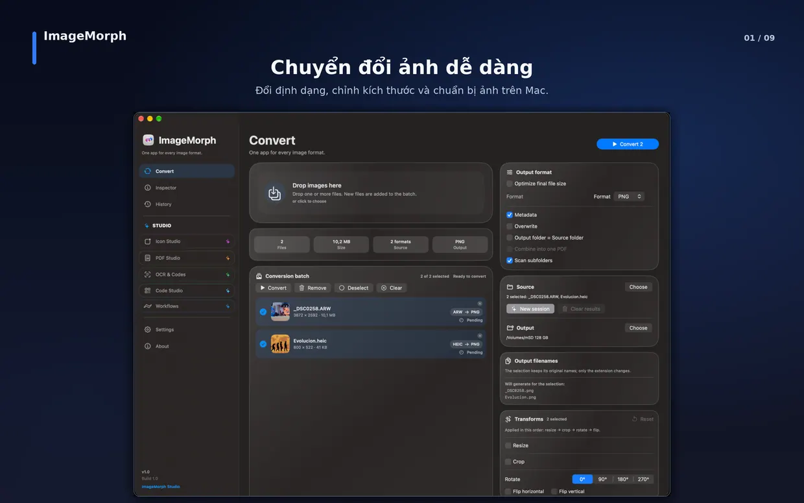
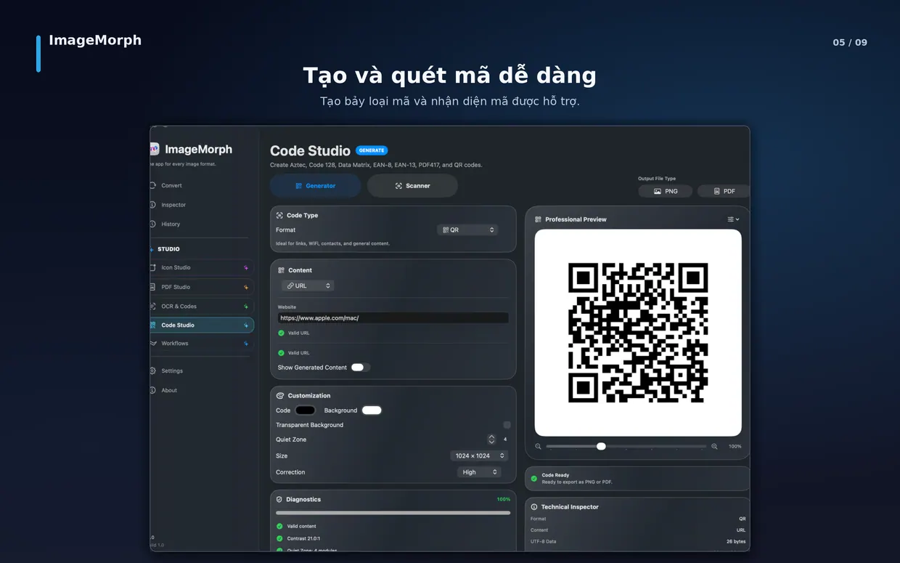
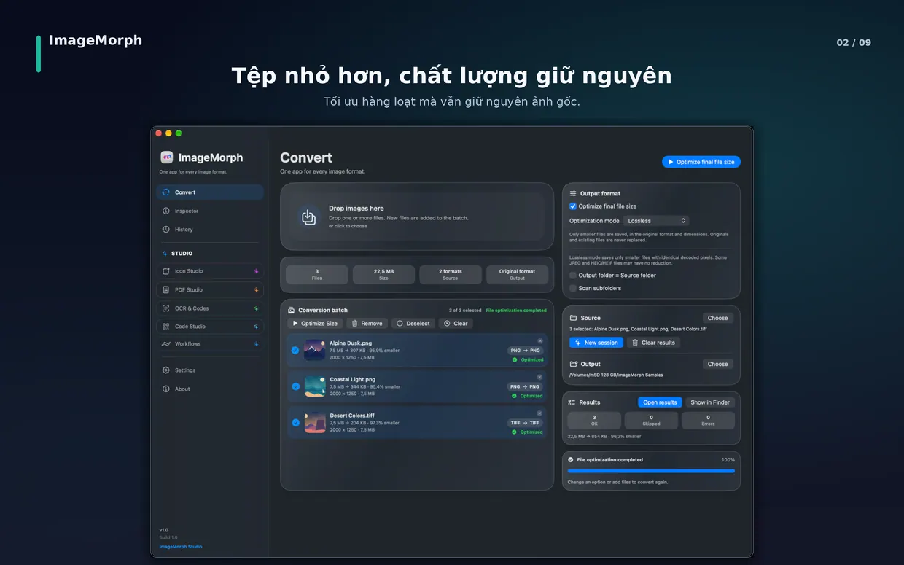
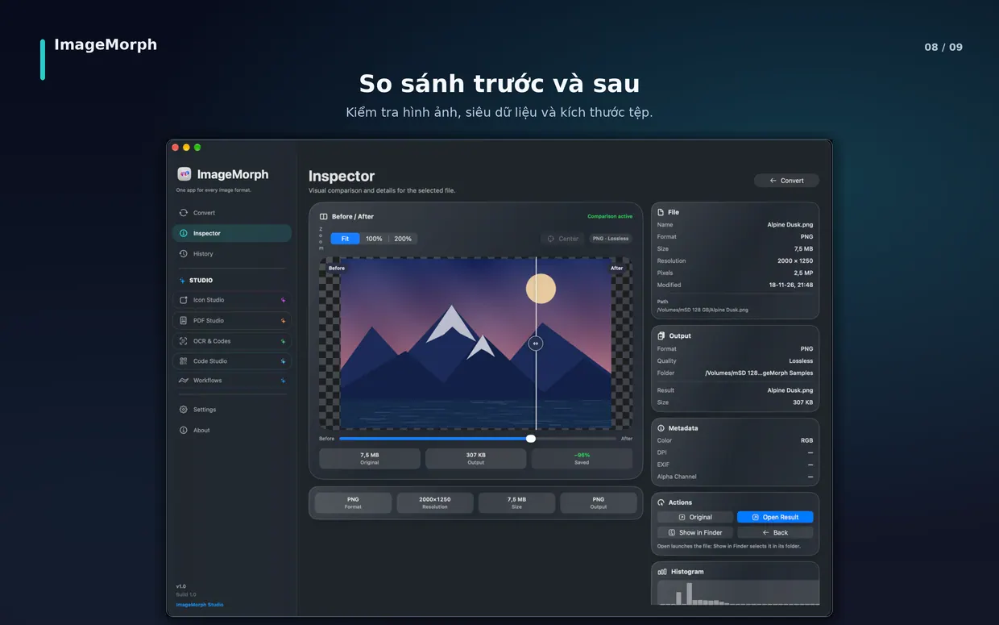
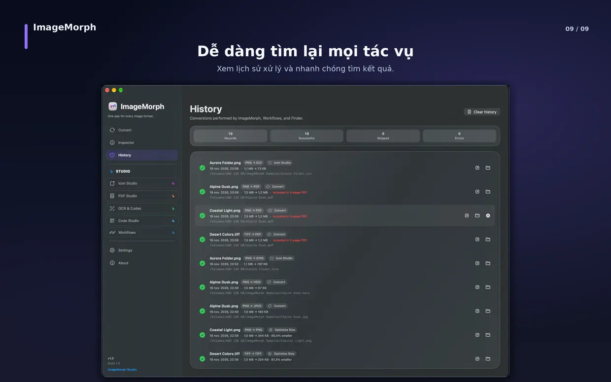
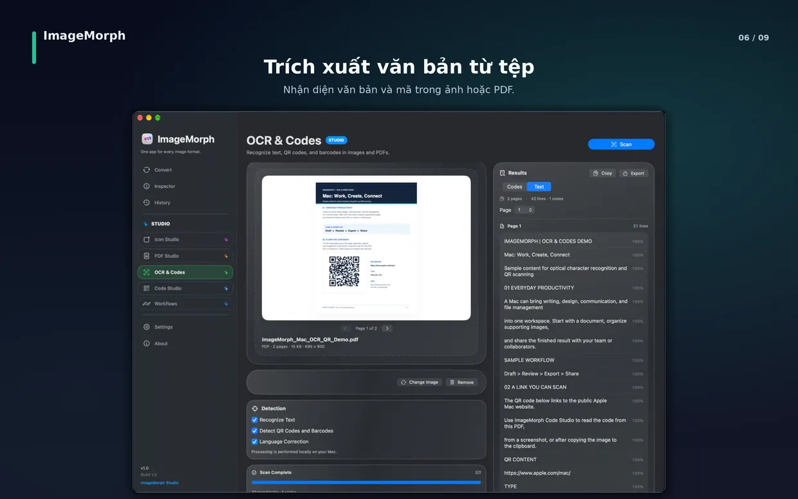
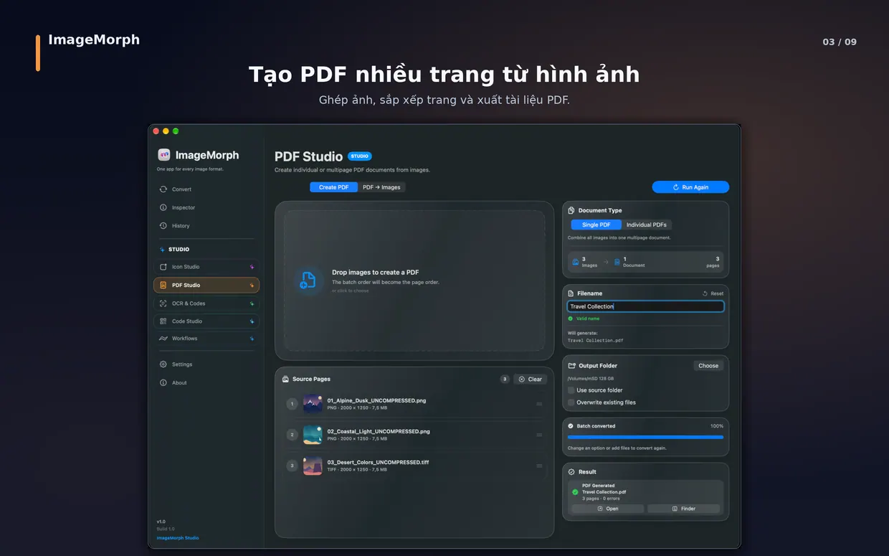
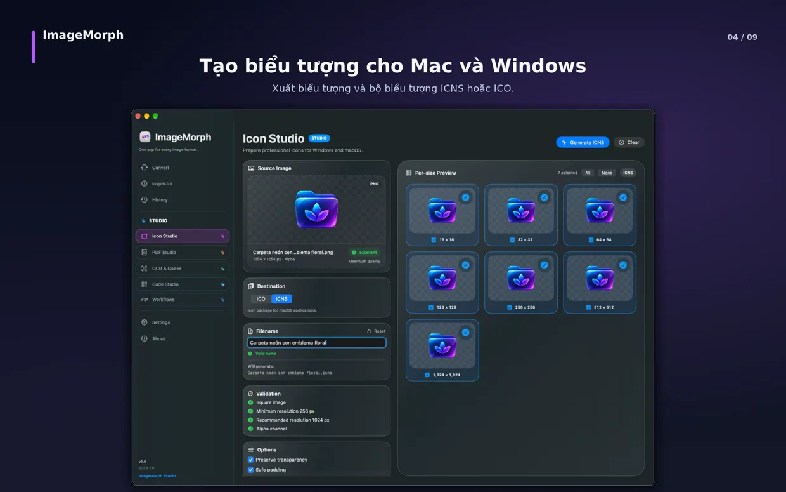
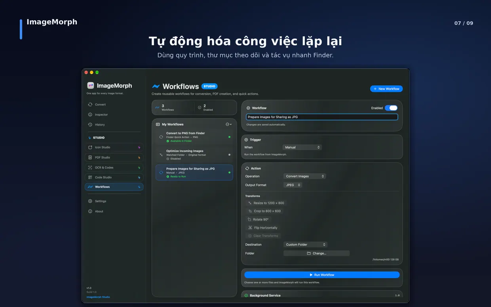

JPEG · PNG · HEIC · TIFF
Xử lý JPEG, PNG, HEIC và TIFF từng tệp hoặc hàng loạt.

Chuyển đổi, thay đổi kích thước và tối ưu ảnh. Tạo PDF và tự động hóa công việc lặp lại trên Mac.
Đang chuẩn bị phát hành trên Mac App Store.

Chuyển đổi, thay đổi kích thước và tối ưu ảnh. Tạo PDF và tự động hóa công việc lặp lại trên Mac.

Nhận dạng chữ trong ảnh và PDF nhiều trang; kiểm tra và xuất kết quả.
Đọc mã QR từ email hoặc PDF trên Mac và xem địa chỉ đích trước khi mở.


Xem trước URL không đảm bảo trang web an toàn. Kiểm tra tên miền và không nhập thông tin cá nhân trên trang đáng ngờ.
Khám phá công cụ mãXử lý JPEG, PNG, HEIC và TIFF từng tệp hoặc hàng loạt.

Thay đổi kích thước và tỷ lệ ảnh theo nhu cầu, giữ tỷ lệ khung hình khi cần.

Tối ưu không mất dữ liệu hoặc có mất dữ liệu khi hỗ trợ; chỉ tạo đầu ra nếu nhỏ hơn.

Xem định dạng, kích thước và siêu dữ liệu. Sau chuyển đổi, so sánh kết quả với bản gốc.

Xem lại thao tác và mở tệp kết quả hoặc hiển thị trong Finder nếu tệp còn tồn tại.

Studio kết hợp OCR, đọc mã, công cụ PDF, biểu tượng và tự động hóa. Mua một lần, không thuê bao.
Studio là giao dịch mua trong ứng dụng vĩnh viễn, tùy chọn.

Nhận dạng chữ trong ảnh và PDF nhiều trang; kiểm tra và xuất kết quả.


Đọc mã từ bộ nhớ tạm, ảnh, PDF hoặc thư mục, hay dùng máy ảnh và máy quét tương thích. Kiểm tra nội dung và liên kết trước khi mở.

Tạo PDF nhiều trang, xuất trang thành ảnh và chỉnh cách xoay.

Tạo ICO và ICNS, kiểm tra kích thước trước khi xuất.


Tạo QR, Code128, Data Matrix, EAN, PDF417 và Aztec dưới dạng PNG hoặc PDF.

Lưu quy trình, theo dõi thư mục và chạy thao tác Finder.

| Tính năng | Free | Studio |
|---|---|---|
| Chuyển đổi, đổi cỡ, tối ưu | Có | Có |
| Hàng đợi, Inspector, so sánh, biểu đồ | Có | Có |
| Tạo PDF cơ bản | Có | Có |
| PDF Studio và xuất trang | — | Có |
| OCR và nhận diện mã | — | Có |
| Tạo mã và camera/máy quét | — | Có |
| Bộ ICO và ICNS | — | Có |
| Quy trình, thư mục theo dõi, Tác vụ nhanh Finder | — | Có |
Giá địa phương, quyền Studio và điều kiện dùng thử hiển thị trong ứng dụng. Mua và khôi phục qua dịch vụ Apple.
Chuyển đổi và tối ưu ảnh, tạo PDF và OCR được thực hiện ngay trên Mac. Nội dung tệp không gửi đến dịch vụ dùng thử Studio. Quyền truy cập tệp, thư mục, máy ảnh và máy quét cần được cấp; cài đặt, lịch sử, dấu trang và nhật ký chứa tên, đường dẫn hoặc lỗi có thể lưu cục bộ.
Đọc chính sách quyền riêng tư